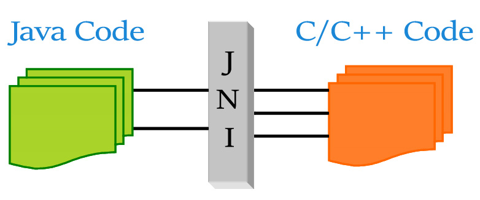
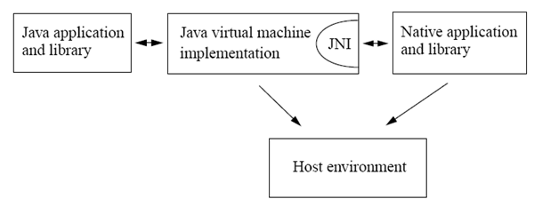
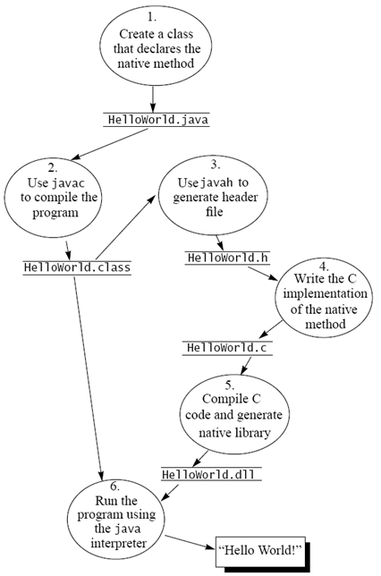

JNI技术与Native代码交互
Java Native Interface (JNI) 是一个外部函数编程接口框架，其可以让在 Java VM 内运行的代码可以调用原生的用其他语言写成的（C/C++，汇编等）可执行程序或者库，也允许外部的应用或者库调用 Java VM 内的 Java 代码。其是一个框架，而不是一个实现。

JNI 指定了一个 Java 代码与外部原生代码间进行通信交互的一个协议。一个 Java native method 是一个在 Java 代码内声明，但是却在外部的其他语言内实现的方法。
JNI的角色
其是 Java VM 实现的一部分，是一个 双向 的接口，允许 Java 代码与外部代码间相互调用。

一个 JNI 程序示例
我们来建立一个 Java 程序，其通过 JNI 来调用 C 写的函数打印出 “Hello word” 几个字符。其过程基本如下：
- 建立一个 HelloWorld.java 文件，声明 native 方法。
- 使用 javac 命令编译出 HelloWorld.class 。
- 使用 javah -jni 来生成一个 C 头文件 HelloWorld.h，此文件中包含了native 方法的实现的函数原型声明 。 javah 命令在 jdk 中有提供。
- 在文件 CLibHelloWorld.c 进行 native 方法的实现。
- 将 CLibHelloWorld.c 编译成一个共享库文件 CLibHelloWorld.so 。
- 用 java HelloWorld.class 执行，其会再入类文件和 .so 库文件。

HelloWorld.java
class HelloWorld { |
这里面有两个地方需要关注一下。
public native void print(); |
使用了 native 关键字来声明 print() 方法是一个 native 方法。这告诉了 Java 的编译器，这个方法不要从 Java 的源代码中查找，而是从外部的库中获得，因此呢，在Java 代码中也没有这个方法的实现。
static { |
在 print 方法被调用前，首先共享库文件必须进行加载。 Java VM 会首先运行静态初始化器。
HelloWorld.h
javah –jni HelloWorld |
使用这个命令将会生成 C 头文件 javah –jni HelloWorld.h
/* DO NOT EDIT THIS FILE - it is machine generated */ |
JNIEXPORT void JNICALL Java_HelloWorld_print (JNIEnv *, jobject); |
这行代码中说明了这么几个事实：
- 函数的命名格式为
JAVA_类名_方法名，这可以用来区别多个类中的同名方法。 - 每个 native 方法的的第一参数
JNIEnv都是一样的。 - jobject 代表了 HelloWorld 的对象本身。
CLibHelloWorld.c
我们来在 C 中实现这个方法。
|
Makefile
然后我们来写个 makefile 来运行它：
CMD_JAVA_HOME="/usr/libexec/java_home" |
输出就很明显了。
Native方法参数
现在，我们想要为我们的 print 方法加上几个参数，我们需要怎么做呢。想要了解这点，我们就要先明白， 在 C 中的数据类型，与 JNI 中数据类型的对应关系，否则，我们无法做到接口的统一。
基本类型
从 这个地址 可以看到比较完整的列表。
| Java Type | Native Type | Description |
|---|---|---|
| boolean | jboolean | unsigned 8 bits |
| byte | jbyte | signed 8 bits |
| char | jchar | unsigned 16 bits |
| short | jshort | signed 16 bits |
| int | jint | signed 32 bits |
| long | jlong | signed 64 bits |
| float | jfloat | 32 bits |
| double | jdouble | 64 bits |
| void | void | N/A |
通常，会有如下两个定义，只是为了方便而已。
jsize 整型用来描述一个索引和大小。
typedef jint jsize; |
引用类型

| Java Reference type | JNI type | Description |
|---|---|---|
| java.lang.object | jobject | Any Java object |
| java.lang.String | jstring | String representation |
| java.lang.Class | jclass | Java class object |
| java.lang.Throwable | jthrowable | Java throwable object |
在 C 中，所有的 JNI 引用类型都被定义为 jobject。
typedef jobject jclass; |
在 C++ 中， JNI 就引入了许多相关的类：
class _jobject {}; |
类型签名
JNI 使用了 Java VM 对类型签名的表示。
| Type Signature | Java Type |
|---|---|
| Z | boolean |
| B | byte |
| C | char |
| S | short |
| I | int |
| J | long |
| F | float |
| D | double |
| L fully-qualified-class ; | fully-qualified-class |
| [ type | type[] |
| ( arg-types ) ret-type | method type |
因此，Java 方法：
long f (int n, String s, int[] arr); |
的类型签名是：
(ILjava/lang/String;[I)J |
print(String);
现在为我们的 print() 方法加上参数。
public native void print(String arg); //native method |
重新生成头文件：
javah -jni HelloWorld |
Native 方法的签名就变了：
JNIEXPORT void JNICALL Java_HelloWorld_print |
现在我们来实现它。这个时候，我们会有一个难题，那就是说 jstring 实际上是一个 JNI 的类型，我们是无法直接使用的，我们必须通过 JNI 提供的方法来，将其转换我们需要的格式。所以，函数的实现最终如下：
JNIEXPORT void JNICALL Java_HelloWorld_print(JNIEnv *env, jobject obj, jstring arg) |
这种形式看起来其实好丑陋，这是因为在 C 和 CPP 中，两者的定义不同，在 C 中，JNIEnv 是 一个指向 JNINativeInterface 的指针，所以说我们得到一个 JNIEnv 指针后，必须解引用后才能拿到真正的 JNIEnv 对象；而在 C++ 中，虽然 结构 JNIEnv 看起来没有什么差别，但是其是以类的形式来编写各种方法，意思就是所有方法都有一个 this 参数，所以调用方法的时候就不需要传递 JNIEnv 本身了。
struct JNINativeInterface_; |
struct JNINativeInterface_ { |
struct JNIEnv_ { |
实际上最终调用的都是 C 编写的函数了。在 C++ 中我们的方法实现就会更简单干净一些：
JNIEXPORT void JNICALL Java_HelloWorld_print(JNIEnv *env, jobject obj, jstring arg) |
原文作者: Gowa2017 Zhang
原文链接: https://gowa2017.github.io/Java/JNI技术与Native代码交互.html
版权声明: 转载请注明出处(必须保留作者署名及链接)